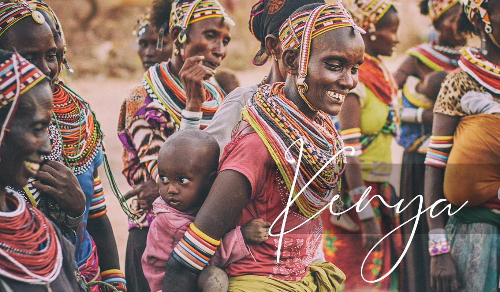

Photo courtesy of Unsplash.
Click to Learn More.
1
Traditional wear in Mexico varies depending on the occasion. In general, however, costumes feature bright colors, such as blue, green, and red; long skirts and sleeves, which help protect wearers from the sun; and accessories, such as hairpieces, hats, and scarves.
2
For women, dresses are festive and elaborately embroidered. Multicolored flowers and stripes are popular designs. Tunics with puffy sleeves and long, flowy skirts are commonly worn for festivals and celebrations, but specific detailing varies depending on the region.
Photo courtesy of Adobe Stock.
Click to Learn More.
1
There are regional variations in traditional clothing in Spain. One of the most distinctive and well known is the traje de flamenco, or “flamenco outfit.” This style of dress originated from the southern region of Andalucia.
2
The dominant features of the traje de flamenco are the ruffles on the sleeves and tail. These dresses also feature bright colors and fun patterns, such as polka dots. The body of the dress hugs the figure and exaggerates the bounce of the ruffles.
3
Flamenco outfits, as the name implies, was popularized by flamenco dancers. Today, they are worn by Spanish women all across the country at festivals and celebrations as well as in everyday life.
Photo courtesy of Unsplash.
Click to Learn More.
1
Many countries in Africa do not have a national costume. Instead, each ethnic group carries their own unique traditions and culture. Kenya is no different with over 70 individual ethnic tribes. One of the most well-known tribes is the Masai people, who wear bright red and decorative jewelry.
2
A few popular pieces of clothing worn throughout Kenya include the kitenge, an embroidered and tie-dyed dress worn by women; the khanga, a shawl-like dress; and the shuka, a blanket worn by men.
3
While each community has their own distinct wear, there are similarities amongst them. Woven headbands, vibrant colors, and beaded necklaces are just a few examples.
Photo courtesy of Adobe Stock.
Click to
Learn More.
1
While there are many different traditional costumes popular in India, one of the most well-known is the lehenga. This outfit, consisting of three separate pieces, is worn at weddings and is one of the most intricate costumes in the world.
2
The lehenga first consists of a crop top which can either be a solid color with little detailing or more elaborate. The main showstopper of this costume is the skirt, which extends from the waist to the floor. Skirts are heavily detailed, with ornate patterns. For weddings, they are often decorated in metallic and gold colors. The final piece of the outfit is the shawl that is wrapped over one shoulder. The shawl can also be intricately embroidered or more simple to complement the skirt.
Photo courtesy of Adobe Stock.
Click to Learn More.
1
The kimono is the national wear of Japan. The outfit consists of several components that must be carefully assembled. Designs are highly intricate to showcase the beauty of Japan and its history. Attention to detail is key as every image and color is symbolically chosen for the individual wearing them.
2
The kimono itself is a made from eight rectangular pieces of fabric. It is wrapped around the person’s shoulders, arms, and waist.The next component is the obi, a sash that wraps around the waist. The obi adds additional detail to the costume and seals the kimono together.
3
Kimonos are worn by both men and women. Specific detailing varies depending on the formality of the occasion as well as marital status of the wearer.
After you've explored some of the world's cultural fashion, click here to test your knowledge!
Correct answer: Spain
Correct answer: a, b, and d
Correct answer: none of the above
Correct answer: puffy
Correct answer: b